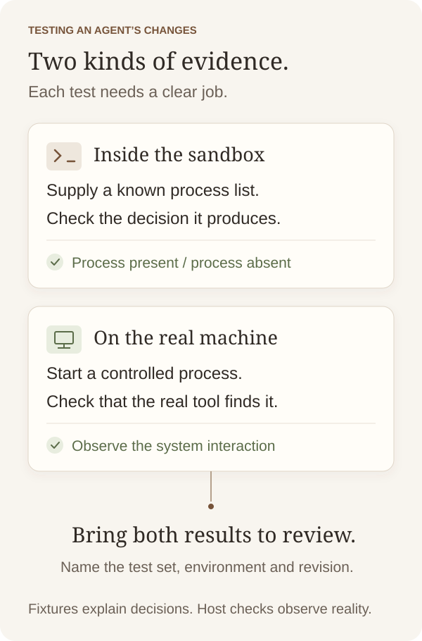

AI engineering
When an AI agent cannot run your tests
How I adapted tooling tests for a restricted environment, and why some checks still needed the real machine.
The takeaway
Before replacing an external dependency with a fixture, identify the real behaviour each test must still observe.
The agent could edit the code, but the tests were blocked
Some tests in my app’s developer tooling worked on the real machine and failed to run inside the coding agent’s sandbox. They needed access to process lists and local sockets that the restricted environment could not provide.
I wanted the agent to check useful parts of its work before handing a change back. Sending every verification run outside the sandbox would leave another person or agent to do it.
I chose to adapt the tests that could run inside, while keeping checks of real-machine behaviour in a separate host run. During review, we found that some replacements had lost behaviour the original tests checked.
Two questions were being tested together
Consider a tool that checks whether a background process is running. It has to obtain a process list from the operating system, then decide whether the process it wants appears in that list.
Those are two questions. Can the tool make the right decision from the information it receives? And can it get the right information from the machine?
Supplied test data, often called a fixture, can answer the first question. Give the code a known list and check its decision. This can run inside a restricted environment without inspecting the laptop’s other processes.
The second question needs access to the real interaction. A supplied list cannot tell us whether the operating-system command works.
What a fixture can show
This teaching example uses invented process identifiers. The function receives another function, listProcesses, which supplies the list. That lets a test control the input without asking the operating system.
function isRunning(pid, listProcesses) {
return listProcesses().includes(pid);
}
isRunning(42, () => [42, 73]); // true
isRunning(42, () => [73]); // falseThe real command could break while those tests passed
In the first call, the supplied list contains 42, so isRunning returns true. The second list contains only 73, so it returns false. Together they check the present and absent decisions.
Both would keep passing if the real process-list command stopped working. Neither call uses it. That missing interaction needs its own check, for example by starting a controlled process and verifying that the real observation can find it.
There is another question to settle when reviewing code like this. What happens if the process list is unavailable? Returning an empty list would make an observation failure look like an absent process. The implementation needs an explicit way to handle that uncertainty. This is a review question, rather than a further bug found in my tooling.
Review found what the replacements could no longer see
One replacement test asserted information it had constructed itself. Another could only see processes it had already been told about, so a stray process could escape its view.
Those findings changed the repair. The original operating-system checks were preserved in a separately named host-only set. Fixture-based tests covered the decisions inside the sandbox.
The comparison that helped was to ask what each old test observed and what its replacement could observe. A similar assertion or a passing test count would have missed that difference.

Both test runs needed a result
The recorded final checks passed for the targeted sandbox suites and the full host run. Each result had a different scope. The sandbox tests covered the selected decisions using controlled inputs, and the host run supplied the broader integration evidence.
Keeping host checks separate creates an ongoing job. They need a clear place in the review process, otherwise a move intended to make tests runnable can quietly leave some checks behind.
A useful handover identifies which tests ran, where they ran, the revision and the result. If a sandbox run excludes host-only tests, its result needs the corresponding host result alongside it.
Ask what the test actually observes
Before replacing a dependency in a test, write down what the existing test can see. Then ask whether the implementation could break while the replacement still passed. Identify the check that would catch that failure and where it will run.
A database gives another example. A fake returned row can help test how code handles the data. A separate integration test can establish whether the real query and connection work in the intended environment.
In my tooling, fixtures made decision tests runnable inside the sandbox. Keeping the host checks preserved the evidence about real process behaviour that the fixtures could not supply.
About this note
Based on a recorded investigation in my own development tooling, with implementation details generalised. AI agents helped with research, changes and review. I chose the approach and the split between sandbox and host checks. The code uses invented identifiers. Final test outcomes are historical recorded results.